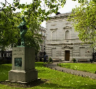

home > Natural History
Natural History
National Museum of Ireland-Natural History
Merrion St Upper
Dublin 2
E:educationph@museum.ie
T: 094 90 31715
W:www.museum.ie
GPS:53.339722, -6.252100.
Galleries of animals from Ireland and overseas, also geological exhibits from a total collection of about 2 million scientific specimens..